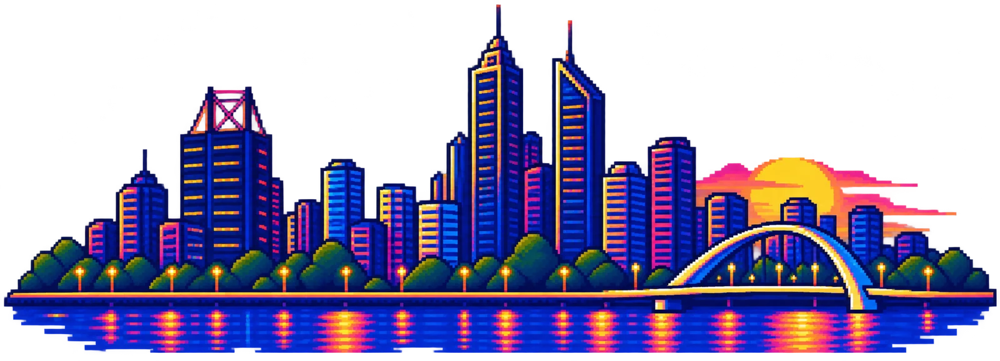

PERTH AI
PERTH AI

While we get going
Get set up
Scan this, work down the list, and put your hand up if you get stuck.
Part 2 · Mash
The codebase is clean. Now they want features.
Where we are
Every bug from Part 1 is fixed, and each fix has a test.
The client is happy. So they've asked for something new.
The ask
“Let shoppers save favourites.”
Signed-in shoppers can save products and see them all on one page.
The tempting move
add favourites to the shop
It'll run. Will it be what they meant?
Tonight's loop
Slow down the thinking. Speed up the building.
/grill-with-docsagree what to build/to-specwrite it down/to-ticketssplit it into tickets/implementtest first, then code reviewprthe agent writes the PR/retromake the next run better
Get the code
Switch to Part 2
No copy yet? Scan, and tick Include all branches. Then switch, and run the setup skill once.
git stash -u git fetch git switch mash/part-2-new-features /setup-matt-pocock-skills
Step 1 · Grill
Let it interview you.
/grill-with-docs I want to add favourites to this shop: signed-in shoppers can save products and see them on a Favourites page. Keep each question short.
Answer fast. If you don't know, say what you'd guess. It writes the words you agree into GLOSSARY.md. Codex: $grill-with-docs.
Step 2 · Spec and tickets
Write down what you agreed.
/to-spec /to-tickets
Same session as the grilling: don't clear yet. Now there's a record to build against and review against.
Step 3 · Test first
Red, then green.
/clear /implement the smallest favourites ticket. Show me the failing test before you write the code.
Fresh context for each ticket. A failing test proves the test can catch the problem.
Step 4 · Review
What could go wrong, and which check catches it?
Run the tests and show me the output. Then open a PR in my repo into mash/part-2-new-features using the PR template, and review it against REVIEW.md.
The pr skill shapes the PR: a picture of the change, proof it works, and how risky it is to merge.
How Anthropic reviews agent code
Risk decides who approves.
Step 5 · Merge
You land it, you own it.
Read the evidence, fix what matters, merge. Then /retro, in the same session, to make the next run better.
Q&A, then show and tell
What did you build?
Show us where you got to. Scan for every skill and when to use it.